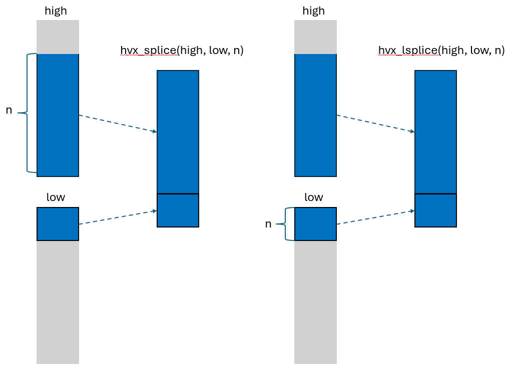

Hexagon (R) HVX Optimization
This section is structured as a list of coding recommendations in order to get competitive performance out of your Ripple programs.
Optimization level
Ripple has been most tested with the -O2 option on HVX,
which seems to be the most common optimization level.
clang -O2 ...
Vector size parameters
Current versions of HVX ISAs tend to come with a register file of 32Kb total. Please check the appropriate programmer’s manuals for any specific information, such as number and bit-width of registers, about the particular architecture version you are compiling for. The following block sizes illustrate single-vector block sizes assuming a vector width of 1024 bits.
| element type | i8/u8 | i16/u16/f16 | i32/u32/f32 |
|---|---|---|---|
| single-vector block size | 128 | 64 | 32 |
Since HVX instruction packets can contain up to four instructions, it is usually not useful to make the size of your block larger than four vectors.
For more information about VLIW slot usage, please consult the Hexagon HVX Programmer’s Reference Manual (available on docs.qualcomm.com).
Make the type of constants (“immediates”) explicit
Performance impact: High.
One thing to remember when coding in Ripple, is that it maintains all semantical aspects of its underlying language. One aspect of C that can impact performance in C and C++ is their implicit type conversions, and the default type for its constants.
Example
Consider the following function, which doubles the value of a float array.
1:void double_me(float * A, unsigned n) {
2: ripple_block_t b = ripple_set_block_shape(HVX_LANES, 32);
3: ripple_parallel(b, 0);
4: for (int i = 0; i <n; ++i) {
5: A[i] = 2.0 * A[i];
6: }
7:}
Problem: The 2.0 immediate is by default a double in C and C++.
Also, type promotion rules in C/C++ indicate that the multiplication line 5 is done after promoting both operands to the same type, double.
Hence, Ripple tries to produce a SIMD multiplication of 32 doubles.
However, current versions of HVX do not support SIMD
double-precision instructions.
As a result, the generated code is sequentialized, resulting in an order of magnitude slower performance than if SIMD could have been used.
Solution: Make the 2.0 immediate explicitly of the float type, using the f suffix.
5: A[i] = 2.0f * A[i];
The same issue can happen with integers, for which the default type is int, as in the following example:
1:void double_me(short * A, unsigned n) {
2: ripple_block_t b = ripple_set_block_shape(HVX_LANES, 64);
3: ripple_parallel(b, 0);
4: for (int i = 0; i <n; ++i) {
5: A[i] = 2 * A[i];
6: }
7:}
Here, the 2 line 5 is an int, and so is the subsequent multiplication,
because of type promotion rules in the C programming language.
Solution: convert it to short explicitly.
5: A[i] = ((short) 2) * A[i];
If you are using C++, precomputing it and forcing it to be a constexpr will make sure that there is no extra cost to this conversion, as in the following code:
1:void double_me(short * A, unsigned n) {
2: ripple_block_t b = ripple_set_block_shape(HVX_LANES, 64);
3: constexpr short two = (short) 2;
3: ripple_parallel(b, 0);
4: for (int i = 0; i <n; ++i) {
5: A[i] = two * A[i];
6: }
7:}
Optimizing floating-point code
Use floating point types up to 32-bit wide (float) only
Performance impact: High.
Hexagon supports two native floating-point types: float and _Float16.
__bf16 is partially emulated.
There isn’t currently a native HVX double vector ISA.
Hence, avoid double-precision computations in your vector codes,
which will come out as sequentialized.
Leverage compiler flags
Extended precision
Performance impact: Medium.
HVX allows extended-precision computations to happen in sequences of floating-point operations happening between memory accesses. These are in a way more precise than IEEE floating-point, but they will result in a different numerical result from the same computation performed on IEEE floating point numbers. It is possible to forgo of extended precision and be fully compatible with IEEE. However, this comes at a performance cost.
The use of fast, extended precision vs. slower, IEEE-compliant precision, is controlled by the following flag:
-mhvx-qfloat=<mode>
We refer to the HVX manual to describe the exact behavior of the following four modes:
strict-ieeewill give you full compatibility with IEEE floating point.ieeeuses extended precision for some operations.lossyuses extended precision for more operations.legacyuses extended precision for almost all operations.
As of clang 21.0, the default is set to lossy.
Warning: the lossy option also implies other flags that impact precision, such as -ffast-math, which declares that floating-point (+, *) operations are commutative and associative, and that the data is free of NaNs and infinity.
Working with finite values
Performance impact: Low.
clang is able to optimize some codes when you know that your floating-point values are always defined (they are not a NaN) and never infinite.
If you are in that case, use the -ffinite-only command-line flag.
Relaxing the ordering of computations
Performance impact: Medium.
Addition and multiplication are commutative and associative for real numbers. This means that you can change the order in which a sequence of (for instance) additions (often called “reductions”) are computed without changing the result. Being able to change this order allows compilers to execute such sequences of operations faster.
Floating point numbers are an approximation for real numbers, and as a consequence, their operations aren’t associative strictly speaking. Changing the order of floating-point computations typically introduces some amount of precision error.
Solution If your computation tolerates some amount of floating-point error, or if semantically that order does not matter for the resulting computation, you can let Ripple know it, using the following command-line flag:
clang -fassociative-math
This will speed up some computations, including reductions (expressed through the ripple_reduce_*() ripple API).
Fast conversions from floating-point to integer
Performance impact: Low.
Conversion from floating-point (Float and float types) to integer
(int16_t and int32_t) can be slow,
as clang tries to implement it as precisely as possible.
Solution Enable fast floating-point conversion, which is very close semantically, but uses a single instruction. To enable it, use the following command-line flag:
clang -mllvm -hexagon-fp-fast-convert=true ...
Using ripple_shuffle on vector pairs
Performance impact: Medium.
We empirically noticed that shuffles on blocks of 2 vectors tend to generate more efficient machine code.
Inlining functions
Performance impact: High.
For an HVX target, there are significant overheads associated with function calls. The overheads mostly arise from saving the register frame onto the stack before the function call and loading the register frame from the stack after the call returns. Consequently, we advise the programmer to utilize clang’s “always_inline” function attribute. Avoid these overheads while maintaining code-readability as follows:
static int foo(int a, int b) __attribute__((always_inline)) {
/// ...
}
or in C++
static int foo(int a, int b) [[gnu::always_inline]] {
/// ...
}
Functions optimized for HVX
High-throughput data reordering (scatter/gather)
Performance impact: High.
Loading from a collection of arbitrary addresses into a vector is by construction a long-latency operation, as it can result in bank conflicts. Hence, we do not recommend the direct use of non-coalesced access functions.
However, the Ripple vector library includes a high-bandwidth memory-to-memory copying API for HVX, which can move large amounts of data in parallel (still with the same type of latency).
In cases where we cannot change our computations
to create coalesced data accesses, we can still rearrange our data into a set
that can be accessed in a coalesced way a bit later,
using the hvx_gather/hvx_scatter API.
Syntax
void hvx_gather(T * dst, T * src, OFF_T offset, OFF_T region_size);
void hvx_scatter(T * dst, T src, OFF_T offset, OFF_T region_size);
These functions launch a high-throughput parallel data reorganization
from memory to memory.
hvx_gather and hvx_scatter are typically beneficial
to reorganize chunks of VTCM data (several or many vectors)
ahead of (for hvx_gather) or after (for hvx_scatter)
a computation that uses the reorganized data in a coalesced way.
The high latency that is inherent to arbitrary data reorganization is
amortized by the ability to run many of these vector reorg operations
concurrently.
There are two possible reorganizations
- collecting data from arbitrary locations to contiguous blocks
in memory, so that later code can work
with coalesced loads and stores:
hvx_gather. - distributing contiguous data to arbitrary locations:
hvx_scatter. This is often done after performing computations on the data in their contiguous form (i.e., efficiently).
hvx_gather and hvx_scatter are affected by conditionals
(they become a masked gather or scatter)
offset represents the offsets in number of elements,
(as opposed to number of bytes), which are added to src for hvx_gather
and dst for hvx_scatter.
For instance if T is int16_t, the source byte offset is 2*src_offset.
region_size represents the number of elements in the region,
on the non-coalesced side of the transfer.
Any address going out of that region is ignored
(the transfer of the addressee does not happen).
Notice how hvx_gather and hvx_scatter effectively offer
three ways to mask element data transfers:
- through masking (using them in a conditional),
- through the use of a negative index (preventing underflows), and
- through the
region_sizeparameter (preventing overflows).
Masking makes the program more readable as it makes this behavior explicit. On the other hand, it also introduces a mask computation, which could add latency to the data transfer.
Use cases for scatter-gather include indirections (A[B[i]]),
large lookup tables, sparse-dense array computations (for instance sparse matrix dense vector multiplication), and strided data accesses, particularly when the data access stride is large (e.g. when accessing element of a large array along columns).
Example 1: dense matrix x sparse vector
Let us look at a dense-sparse vector inner product
(more often found inside “SpMV”, sparse-matrix-dense-vector products).
The sparse vector S is accompanied with an index (S_index),
representing the coordinates of its non-zero elements.
Let the dense vector be named V.
Let’s start with a straightforward implementation.
Since we only want to perform the multiplications for which S is non-zero,
we select the corresponding elements in V:
float SpVV(float * S, int32_t * S_index, size_t nS, float * V) {
ripple_block_t BS = ripple_set_block_shape(HVX_PE, 32);
float result = 0.f;
ripple_parallel(BS, 0);
for (size_t i = 0; i < nS; ++i) {
result += S[i] * V[S_index[i]];
}
return ripple_reduceadd(0b1, result);
}
Unfortunately, when vectorized, the indirection in V[S_index[i]] translates
to vector gathers, which are very inefficient.
In particular, they introduce long latencies in the innermost computational
loop.
These latencies tend to add up at each loop iteration, making the overall loop
slow.
The idea here is to still do long-latency gathers, but do a lot of them
in parallel by using hvx_gather
to make all accesses in the inner product loop coalesced.
To simplify the following code, we assume the existence of vtcm_malloc() and
vtcm_free() functions.
float SpVV(float * S, int32_t * S_index, size_t nS, float * V, size_t nV) {
ripple_block_t BS = ripple_set_block_shape(HVX_PE, 32);
float * gathered_V = vtcm_malloc(sizeof(float) * nS, /*align_as=*/128);
ripple_parallel(BS, 0);
for (size_t i = 0; i < nS; ++i) {
hvx_gather(gathered_V, i, V, S_index[i], /*region_size=*/nV);
}
float result = 0.f;
ripple_parallel(BS, 0);
for (size_t i = 0; i < nS; ++i) {
result += S[i] * gathered_V[i];
}
vtcm_free(gathered_V);
return ripple_reduceadd(0b1, result);
}
Since all addresses in the `hvx_gather` loop are conflict-free,
all the data reorganization is done in parallel (up to the limits offered by
the underlying HVX hardware).
Assuming the possibility to run `nS / 32` reorg copies at once,
we are only paying the latency of one copy in the `hvx_gather` loop.
The subsequent inner product loop is optimal in terms of its load/store
latencies, which are all coalesced.
### Constraints
`hvx_gather` and `hvx_scatter` have very specific semantics,
to be enforced by the developer:
- Both `src` and `dst` have to lie in local memory (VTCM)
- In hvx_gather, `dst` needs to be aligned on a HVX vector boundary.
- `T` can be any base type.
- `OFF_T` can be `int16_t` or `int32_t`.
Its bitwidth has to match that of the elements being transferred.
Notice how this limits the offset values to 32767 in the `int16_t` case.
- Transfers of elements for which the index is negative are ignored.
- Addresses in a (hardware) vector transfer cannot cross VTCM page boundary.
VTCM page size depends upon the configuration.
As time of writing, it is typically 4 or 8 MB,
or less if the VTCM is smaller than 4MB.
- The ripple block size must be such that each call to hvx_gather or
hvx_scatter transfers one native HVX vector.
## Explicit bfloat16 conversions
__Performance impact__: High.
Ripple supports three types of conversions from `float` to `__bf16`:
- `to_bf_trunc`, a direct truncation
- `to_bf_nan`, a truncation that avoids incorrect NaN conversions (they can become an infinity using the direct shift)
- `to_bf_round`, a conversion that performs an even rounding and avoids incorrect Nan conversions. The behavior of this conversion is compatible with x86 bfloat conversion.
## Dynamic rotations
__Performance impact__: Low.
### `hvx_rotate_to_lower`
`hvx_rotate_to_lower` is a rotation across elements of a
block (interpreted as a one-dimensional block).
If B is the block size,
`hvx_rotate_to_lower(x, n)` moves element `k` of `x`
from index `k` to index `k - n modulo B`.
Values of `n` must be between 0 and B - 1.
### Example 1
The following code snippet:
```C
ripple_block_t BS = ripple_set_block_shape(VECTOR_PE, 8);
char alphabet = 'a' + ripple_id(BS, 0);
char rotated_alphabet = hvx_rotate_to_lower(alphabet, 2);
creates alphabet, a 8-element block with letters a to h
| a | b | c | d | e | f | g | h |
and then rotates it down by 2 elements, giving the following block:
| c | d | e | f | g | h | a | b |
Example 2: Partial prefix sum
In the code below, we use it to implement a partial prefix sum
in a the sum vector.
This means that the k-th element in sum contains the sum of all elements
in input from 0 to k.
Each iteration of the step loop sums each vector element of index k of sum
with the element of index k-step for all k’s greater than step.
This is done by rotating sum up by step indices.
To rotate up, recall that rotate is cyclical,
hence rotating by block_size - step towards lower indices
is equivalent to rotating by step toward upper indices.
The first iteration (step=1) computes the sum of each element with its direct
neighbor.
The second one sums pairs (leaving the first pair alone using
(v >= step)), then quads, etc.
The resulting partial sum vector is then stored into the output array.
#define VECTOR_PE 0
#define VECTOR_SIZE 32
void partial_prefix_sum(int32_t input[VECTOR_SIZE], int32_t output[VECTOR_SIZE]) {
ripple_block_t BS = ripple_set_block_shape(VECTOR_PE, VECTOR_SIZE);
size_t block_size = ripple_get_block_size(BS, 0);
size_t v = ripple_id(BS, 0);
int32_t sum = input[v];
for (size_t step = 1; step < block_size; step *= 2) {
// Shifts to upper by 'step' and adds
sum += (v >= step) ? hvx_rotate_to_lower(sum, block_size - step) : 0;
}
output[v] = sum;
}
hvx_rotate_to_lower can be used on multi-dimensional blocks, in which case
the block will be interpreted as one-dimensional (basically, flattened)
during the rotation.
Constraints
hvx_rotate_to_lowerworks on blocks that map to a single HVX vector.TYPEcan be any one of(u?)int(8|16|32|64)_tand_Float16/float/double. i.e.,dst[i] = src[(i + n) % get_size(N)]whereNis the total size of the block.
Narrowing shifts
Performance impact: Medium.
Syntax
narrow_t hvx_narsh[[_rnd]_sat][_noshuff](wide_t odd, wide_t even, uint32 shift);
A narrowing shift (or “narsh”) is an operation on integers,
which performs a right shift followed by a conversion
to a smaller integer type.
The conversion can be done by truncation or using saturation (using the function name suffix _sat).
When saturation is used, we can also request rounding up, using the
_sat_rnd suffix.
The shift amount sh is the same for all elements of the block.
Two forms are supported. The first, faster form takes two inputs, performs a narrowing shift, and shuffles the resulting block.
The second form, suffixed with _noshuff, doesn’t shuffle the result.
Supported source and destination types __
| wide (source) type | narrow (destination) type |
|---|---|
| i32 (int32_t) | i16, u16 |
| u32 (uint32_t) | u16 |
| i16 (int16_t) | i8, u8 |
| u16 | u8 |
An interesting aspect of this function is that it packs the narrowed by pairs, i.e. two 32-bit integers get narrowed and packed into one 32-bit integer.
Examples
int16_t hvx_narsh_sat_i16toi8(int16_t odd, int16_t even, uint32_t shift);
uint32_t hvx_narsh_rnd_sat_u32tou16_noshuff(uint32_t odd, uint32_t even, uint32_t shift);
Constraints
hvx_narsh works on block sizes that occupy a full HVX vector.
Vector splicing
Performance impact: High.
Syntax
T hvx_splice(T low, T high, size_t n);
T hvx_lsplice(T low, T high, size_t n);
This is a flat operator, which means that it considers a block as being
one-dimensional.
Hence, we describe blocks here as “vector“s.
The difference between hvx_splice and hvx_lsplice is which argument we take n elements from.
-
hvx_spliceforms a vector from two vectorshighandlow. Let’s callNthe number of elements in the vector. The returned vector contains thenlowest elements ofhighas its highest elements, and theN-nhighest elements oflowas its lowest elements. -
hvx_lsplice(“low splice”) forms a vector from two vectorshighandlow. The returned vector contains thenhighest elements oflowas its lowest elements, and theN-nlowest elements ofhighas its highest elements.
This behavior is illustrated on Figure H1.

Figure H1. hvx_splice/hvx_lsplice behaviorNote: An implicit “modulo N” is applied to n, to ensure sound semantics.
Typical uses for hvx_splice are codes that use overlapping windows of tensors,
for example in stencils, convolutions and pooling.
Example 2 will be a sliding window, a 1-dimensional Gaussian blur.
hvx_splice is also sometimes used to implement padding, as shown in Example 1.
Example 1
We need to add two arrays, but only one of them has a size
that is a multiple of the HVX vector size (here called HVX_SIZE_U16).
#include <ripple/HVX_Splice.h>
template <typename T>
static void padded_add(size_t n, const T *in1_padded, const T *in2_unpadded,
T *out_padded, bool lower) {
constexpr size_t nv = __HVX_LENGTH__ / sizeof(T);
ripple_block_t B = ripple_set_block_shape(0, nv);
assert(n % nv == 0);
unsigned v = ripple_id(B, 0);
T zero = ripple_broadcast(B, 0b1, static_cast<T>(0.f));
// full-vector loop
unsigned i;
for (i = 0; i + nv < n; i += nv) {
out_padded[i + v] = in1_padded[i + v] + in2_unpadded[i + v];
}
// Epilogue using hvx_lsplice (pad remainder of in2 with zeros)
// There aren't enough elements in in2_unpadded to add with.
// We're splicing that partial vector with a vector of zeros
if (lower) {
out_padded[i + v] =
in1_padded[i + v] +
// to specify the #elements taken from the lower vector --> lsplice
hvx_lsplice(/*low=*/in2_unpadded[i + v - 3], /*high=*/zero, nv - 3);
} else {
out_padded[i + v] =
in1_padded[i + v] +
// to specify the #elements taken from the upper vector --> splice
hvx_splice(/*low=*/in2_unpadded[i + v - 3], /*high*/ zero, 3);
}
}
Note that the same effect can be obtained using conditionals in this case.
The epilogue code in padded_add below could be replaced with the following
code to obtain the same result.
out_padded[i + v] = in1_padded[i + v] + (i + v < n) ? in2_unpadded[i + v] : 0;
The difference between the two lies in the use of predicate registers in the latter. The sequence of instructions for the original padded_add epilogue are roughly:
- Compute
n - i(a scalar). - Top off
in2_unpaddedwith zeros usinghvx_lsplice. - Add
in1_paddedwith the combined vector
The sequence of instruction for the conditional-based version is roughly:
- Compute the vector predicate for the expression
i + v < n. - Select the elements from the zero-vector and
in2_unpaddedas specified in the vector predicate. - Add
in1_paddedwith the resulting vector
While the number of steps seems comparable,
computing predicates can be more expensive than computing non-predicates.
Hence in this case, the version based on hvx_lsplice is generally preferred.
Example 2
Stencil operations are often used to write filters, or iteratively solve partial differential equations.
The following code is a simple gaussian blur operating on a 1-d signal:
void gaussian_blur(size_t n, float * in, float * out) {
constexpr float one_third = 1.f/3.f;
out[0] = in[0] + in[1];
for (size_t i = 1; i < n - 1; ++i) {
out[i] = (in[i - 1] + in[i] + in[i + 1]) * one_third;
}
out[n - 1] = in[n - 2] + in[n - 1];
}
A naïve vectorization can be obtained by decorating the i loop with
ripple_parallel.
No matter how in and out are align, at least two of the loads of in
will be unaligned.
We can do better by using only aligned loads and stores.
void gaussian_blur(size_t n, float * in, float * out) {
constexpr float one_third = 1.f/3.f;
constexpr size_t hvx_bytes = __HVX_LENGTH__;
constexpr size_t nv = hvx_bytes / sizeof(float);
ripple_block_t B = ripple_set_block_shape(HVX_LANES, nv);
size_t v = ripple_id(B, 0);
in = ripple_ptr_alignment(&in[0], hvx_bytes);
out = ripple_ptr_alignment(&out[0], hvx_bytes);
float zero = ripple_broadcast(B, 0b1, static_cast<T>(0.f));
// prologue
if (n <= nv) { // special case of a single vector
out[v] =
(hvx_lsplice(zero, in[v], 1) + in[v] +
hvx_splice(in[v], zero, 1)) * one_third;
return;
}
out[v] =
(hvx_lsplice(zero, in[v], 1) + in[v] + hvx_splice(in[v], in[nv + v], 1)) *
one_third;
// Steady-state
size_t i;
for (i = nv; i + nv < n; i += nv) {
out[i + v] = (hvx_lsplice(in[i - nv + v], in[i + v], 1) +
in[i + v] +
hvx_splice(in[i + v], in[i + nv + v], 1)) *
one_third;
}
// Epilogue (last vector)
out[i + v] = (hvx_lsplice(in[i - nv + v], in[i + v], 1) +
in[i + v] +
hvx_splice(in[i + v], zero, 1)) *
one_third;
}
The code above is faster than the original code, because it only involves aligned loads and stores.
We can make it even faster by noticing that consecutive iterations of i
reuse two of the three input vectors.
Hence, instead of re-loading these two vectors,
we can just reuse them from the previous iteration.
This reuse technique, often called “register rotation,”
is applied to gaussian_blur below.
void gaussian_blur(size_t n, float * in, float * out) {
constexpr float one_third = 1.f/3.f;
constexpr size_t hvx_bytes = __HVX_LENGTH__;
constexpr size_t nv = hvx_bytes / sizeof(float);
ripple_block_t B = ripple_set_block_shape(HVX_LANES, nv);
size_t v = ripple_id(B, 0);
in = ripple_ptr_alignment(&in[0], hvx_bytes);
out = ripple_ptr_alignment(&out[0], hvx_bytes);
float zero = ripple_broadcast(B, 0b1, static_cast<T>(0.f));
// prologue
if (n <= nv) { // special case of a single vector
out[v] =
(hvx_lsplice(zero, in[v], 1) + in[v] +
hvx_splice(in[v], zero, 1)) * one_third;
return;
}
float next_in = in[nv + v];
float cur_in = in[v];
out[v] =
(hvx_lsplice(zero, cur_in, 1) + cur_in + hvx_splice(cur_in, next_in, 1)) *
one_third;
// Steady-state
size_t i;
float prev_in;
for (i = nv; i + nv < n; i += nv) {
prev_in = cur_in; // register rotation
cur_in = next_in; // register rotation
next_in = in[i + nv + v];
out[i + v] = (hvx_lsplice(prev_in, cur_in, 1) +
cur_in +
hvx_splice(cur_in, next_in, 1)) *
one_third;
}
// Epilogue (last vector)
prev_in = cur_in;
cur_in = next_in;
out[i + v] = (hvx_lsplice(prev_in, cur_in, 1) +
cur_in +
hvx_splice(cur_in, zero, 1)) *
one_third;
}
Let V the number of HVX vectors in in.
With this transformation, the total number of vector loads from in went from
about 3*V to V, without adding any work, a clear performance win.
As always with Ripple, the compiler may be able to perform loop optimizations that are competing with or similar to register rotations.
The speedup you will get will depend upon how successful clang was with its own optimizations.
Constraints
high and low shapes must correspond to
the number of elements in one HVX Vector.
Copyright (c) 2024-2025 Qualcomm Innovation Center, Inc. All rights reserved. SPDX-License-Identifier: BSD-3-Clause-Clear